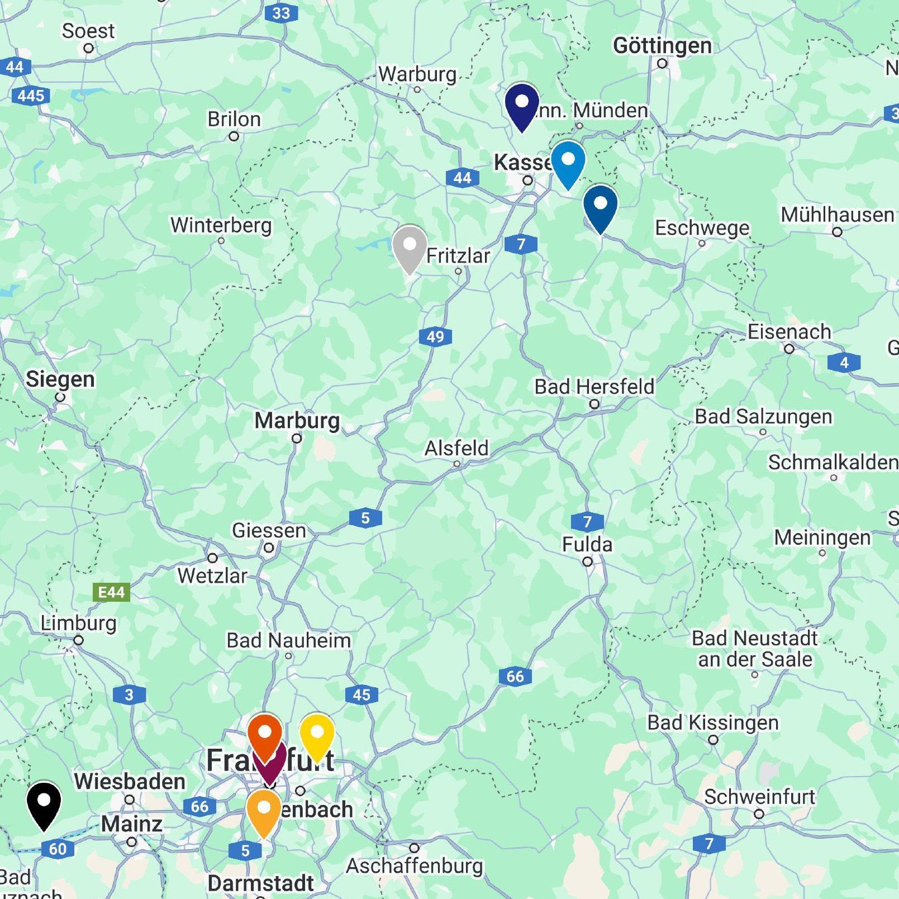

Überblick
Unsere WG ist bekannt für ihre großartige Lage in der Nähe des Schlosses und den atemberaubenden Blick über die Weinberge. Mit einer bunten Mischung aus Charakteren und Interessen sind wir mehr als nur eine Wohngemeinschaft – wir sind eine Familie.

Die beliebtesten Fächer
- Politikwissenschaften
- Mathematik
- Informatik, Physik und Chemie
Die Mentoren
Unsere Mentoren sind Herr von Stern und Herr Ohler. Sie unterstützen uns in allen Lebenslagen und sorgen für ein ausgewogenes WG-Leben. Herr Ohler hält uns in einem eisernen, aber gütigen Griff, während wir Herr von Stern noch erklären müssen, wie das Leben am Berg eigentlich funktioniert.
Unsere Herkunft

Diese Karte zeigt unsere Heimatorte mit markierten Pins, um die Vielfalt unserer Herkunft darzustellen. Sie verdeutlicht, dass unsere WG ein Mix aus verschiedenen Orten Hessens ist – und darüber hinaus.
| Name | Dienst | Geburtstag | Herkunft |
|---|---|---|---|
| Marco | Oberflächen putzen und Müll | 09.04.2008 | Hessisch Lichtenau (mitten im Nirgendwo, oder eben Nordhessen) |
| Simon | Staubsaugen | 28.10.2007 | Bad Wildungen (tiefstes Nordhessen) |
| Ferdinand | Mit Felix das Bad und die Duschen putzen | 12.06.2008 | Kaufungen (tatsächlich recht bewohntes Nordhessen) |
| Felix | Mit Ferdinand das Bad und die Duschen putzen | 08.10.2007 | Espenau (in der Nähe vom einzigen Flughafen Hessens, abgesehen von Frankfurt) |
| Max | Die Toiletten putzen | 05.08.2007 | Laut ihm Frankfurt am Main, in Wahrheit aber Maintal |
| Paul | Auch die Toiletten putzen | 29.01.2009 | Frankfurt am Main |
| Daniel | Geschirr spülen | 14.12.2007 | Frankfurt am Main |
| Zhifei | Ebenfalls Geschirr spülen | 19.05.2010 | Langen (wäre auch gerne Frankfurt) |